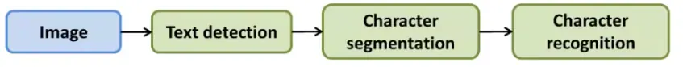
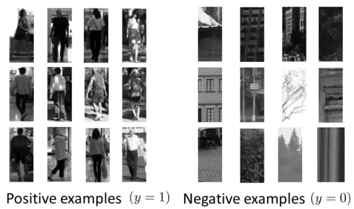
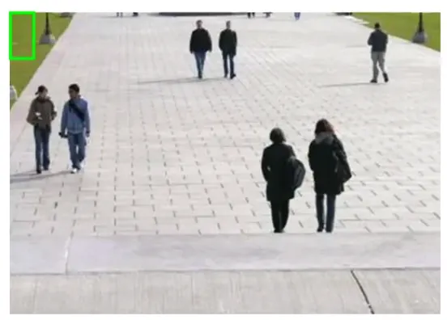
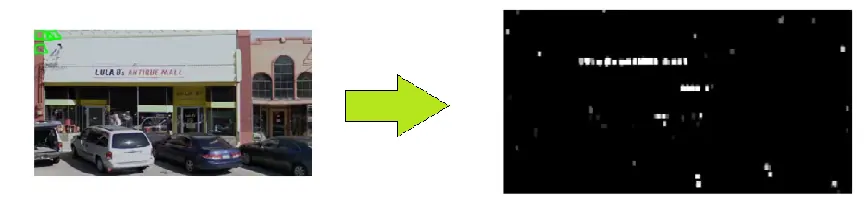
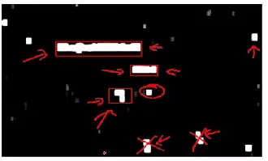
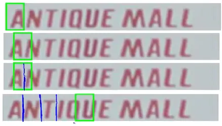
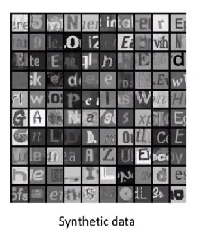

Application Example - Photo OCR
Optical Character Recognition (OCR) enables computers to interpret text within images. This process involves a machine learning pipeline comprising several steps, each focused on a specific aspect of OCR, such as locating text, separating characters, and classifying their images. The pipeline integrates various techniques, including data synthesis, to enhance the accuracy and reliability of character recognition.
Detailed Mathematical and Technical Aspects
I. Machine Learning Pipeline in OCR:
- Systematic Approach: A machine learning pipeline is a systematic approach involving sequential steps for solving complex problems. It ensures that each phase of the process contributes to the overall goal of accurate text recognition.
- Pipeline Components: In OCR, this pipeline includes the generation of training datasets, classifier training, and the application of these classifiers to new data.
II. Training Data and Classifier Development:
- Dataset Creation: Develop a training dataset comprising positive (text) and negative (non-text) image examples. This dataset forms the foundation for training robust classifiers.
- Classifier Training: Train a classifier using this dataset. The classifier learns to differentiate between text and non-text image patches, forming the basis for accurate text detection.
III. Sliding Window Technique:
- Implementation: Implement a sliding window technique to apply the classifier across different sections of an image. This involves moving a window across the image, classifying each patch as text or non-text.
- Efficiency: This method ensures that all parts of the image are examined systematically, increasing the chances of detecting text accurately.
IV. Character Recognition:
- Focus on Characters: After detecting text regions, the focus shifts to recognizing individual characters within these regions.
- Specialized Training Set: Use a specialized training set of character images, which enhances the classifier’s ability to recognize different characters accurately.
- Data Synthesis: Employ data synthesis, such as introducing distortions to character images, to enhance training data variability. This process makes the model more robust to variations in real-world data.
Problem Description and Pipeline
Understanding the Photo OCR Problem
- Challenge: The primary challenge is teaching computers to interpret text in digital images efficiently and accurately.
- Complexity: This involves dealing with variations in text appearance, such as different fonts, sizes, orientations, and background noise.
The Pipeline Structure
- Modular Approach: Photo OCR involves a sequence of distinct modules, each handling a part of the process. These modules may include machine learning algorithms and data processing steps, each contributing to the overall goal of accurate text recognition.

The following offline example trains a classifier on explicit three-by-three glyphs, finds character spans in a synthetic strip, and predicts the text. It also evaluates an independent recognizer on the bundled handwritten-digit dataset. Every input is defined in code or supplied with scikit-learn.
import numpy as np
from sklearn.datasets import load_digits
from sklearn.linear_model import LogisticRegression
from sklearn.metrics import accuracy_score
from sklearn.model_selection import train_test_split
from sklearn.neighbors import KNeighborsClassifier
from sklearn.pipeline import make_pipeline
from sklearn.preprocessing import StandardScaler
glyphs = {'I': np.array([[1, 1, 1], [0, 1, 0], [1, 1, 1.0]]), 'L': np.array([[1, 0, 0], [1, 0, 0], [1, 1, 1.0]]), 'T': np.array([[1, 1, 1], [0, 1, 0], [0, 1, 0.0]])}
rng = np.random.default_rng(0)
training = []
labels = []
for label, glyph in glyphs.items():
for _ in range(30):
training.append(np.clip(glyph + rng.normal(0, 0.08, glyph.shape), 0, 1).ravel())
labels.append(label)
recognizer = KNeighborsClassifier(n_neighbors=1).fit(training, labels)
strip = np.concatenate([part for c in 'ILT' for part in [glyphs[c], np.zeros((3, 1))]], axis=1)
active = (strip > 0.5).any(axis=0)
edges = np.diff(np.r_[False, active, False].astype(int))
starts, ends = (np.flatnonzero(edges == 1), np.flatnonzero(edges == -1))
crops = [strip[:, left:right].ravel() for left, right in zip(starts, ends)]
recognized = ''.join(recognizer.predict(crops))
assert recognized == 'ILT'
np.testing.assert_array_equal(starts, [0, 4, 8])
np.testing.assert_array_equal(ends, [3, 7, 11])
print('segmented half-open column intervals:', [(int(a), int(b)) for a, b in zip(starts, ends)])
print('recognized synthetic text:', recognized)
digits = load_digits()
X_train, X_test, y_train, y_test = train_test_split(digits.data, digits.target, test_size=0.25, stratify=digits.target, random_state=0)
model = make_pipeline(StandardScaler(), LogisticRegression(max_iter=2000, C=1.0))
model.fit(X_train, y_train)
prediction = model.predict(X_test)
accuracy = accuracy_score(y_test, prediction)
assert prediction.shape == y_test.shape and accuracy > 0.85
np.testing.assert_allclose(model.named_steps['standardscaler'].mean_, X_train.mean(axis=0))
print('held-out digit accuracy:', round(accuracy, 6), 'test images:', len(y_test))The synthetic strip returns ILT with spans [0,3), [4,7), and [8,11). The independent digit classifier obtains about 0.968889 accuracy on 450 held-out images in the pinned environment. Its training-only scaler is checked explicitly. Isolated handwritten digits and controlled glyphs provide runnable component examples; evaluating a photograph pipeline also requires localization and segmentation data.
Pedestrian Detection (Analogous Example)
Training Data Collection
- Positive and Negative Examples: Collect a set of images containing pedestrians (positive examples) and images without them (negative examples). This data forms the basis for training the pedestrian detection model.

Classifier Application
- Standard Human Aspect Ratio: Apply the trained classifier on a new image using a standard human aspect ratio patch (e.g., 82 x 36 pixels). This step involves moving the patch across the image to detect pedestrians.
- Iterative Process: Iterate this process across the entire image, adjusting the patch position and size to ensure comprehensive pedestrian detection.

Window proposal generation can be checked independently of a classifier. This example enumerates three-by-three patches at stride two in an eight-by-twelve array and verifies their coordinates. A pedestrian model would require its own trained patch representation and appropriate window sizes, such as height 82 and width 36.
import numpy as np
from numpy.lib.stride_tricks import sliding_window_view
image = np.arange(8*12).reshape(8, 12)
patches = sliding_window_view(image, (3, 3))[::2, ::2]
assert patches.shape == (3, 5, 3, 3)
positions = [(2*r, 2*c) for r in range(3) for c in range(5)]
vectors = patches.reshape(-1, 9)
assert len(positions) == len(vectors) == 15
np.testing.assert_array_equal(vectors[0], image[:3, :3].ravel())
np.testing.assert_array_equal(vectors[-1], image[4:7, 8:11].ravel())
print("window count:", len(vectors), "first/last origins:", positions[0], positions[-1])Each position identifies the patch supplied to a trained classifier. Larger objects require additional window sizes or resized images. Enumeration alone verifies coverage and coordinates; detection quality is measured against labeled object locations.
Text Detection in Images
Training and Classifier Deployment
- Training Set: Similar to pedestrian detection, prepare a training set with examples of text and non-text. This dataset is crucial for training the text detection model.
- Predefined Window: Apply a trained classifier to an image using a predefined rectangular window, systematically scanning the image for potential text regions.

A minimal trained foreground detector can use the explicit glyphs defined above and low-intensity backgrounds. The following classifier learns this controlled patch distinction and checks its predictions on the three prototypes and a blank patch:
import numpy as np
from sklearn.svm import LinearSVC
rng = np.random.default_rng(1)
positive = np.vstack([np.clip(g + rng.normal(0, .05, (30, 3, 3)), 0, 1).reshape(30, 9)
for g in glyphs.values()])
negative = rng.uniform(0, .1, size=positive.shape)
patch_X = np.vstack([positive, negative])
patch_y = np.r_[np.ones(len(positive)), np.zeros(len(negative))]
detector = LinearSVC(C=1., dual=False, random_state=0).fit(patch_X, patch_y)
prototypes = np.array([g.ravel() for g in glyphs.values()])
np.testing.assert_array_equal(detector.predict(prototypes), np.ones(3))
np.testing.assert_array_equal(detector.predict(np.zeros((1, 9))), [0])
print("prototype and blank scores:",
np.round(detector.decision_function(np.vstack([prototypes, np.zeros(9)])), 6))Region Identification
- Confidence Levels: The classifier outputs varying confidence levels, represented by shades of gray, indicating the likelihood of text presence. Higher confidence levels indicate a higher likelihood of text presence.
- Expansion Algorithm: Use an expansion algorithm to identify and enlarge potential text regions. This involves merging nearby regions and eliminating improbable ones based on size or aspect ratio.

For a binary foreground mask, horizontal dilation can connect nearby character strokes before connected-component labeling. This NumPy/SciPy example uses the synthetic strip above and checks the resulting region count:
import numpy as np
from scipy.ndimage import binary_dilation, label, find_objects
foreground = strip > .5
expanded = binary_dilation(foreground, structure=np.ones((1, 3), dtype=bool))
components, count = label(expanded)
regions = find_objects(components)
assert count == 1 and len(regions) == 1
row_slice, column_slice = regions[0]
print("merged region:", (column_slice.start, row_slice.start,
column_slice.stop, row_slice.stop))The structuring element connects this fixture into one region. Its width defines which gaps are bridged: too much dilation can merge separate words, and too little can split a word. The region is a proposal whose validity still requires the detector and annotation convention.
Character Segmentation
1D Sliding Window Approach
- Sliding Window: Slide a one-dimensional window along identified text areas. This technique helps in segmenting the text into individual characters.
- Character Separation: Determine if each window segment represents a potential character separation. Insert divisions between characters when appropriate to ensure accurate segmentation.

For the controlled strip, a vertical projection identifies columns containing foreground. Contiguous active spans become character candidates. The function below retains the half-open interval convention used by NumPy slicing:
import numpy as np
def segment_columns(image, threshold=.5):
active = (image > threshold).any(axis=0)
edges = np.diff(np.r_[False, active, False].astype(int))
starts, ends = np.flatnonzero(edges == 1), np.flatnonzero(edges == -1)
return [(int(left), int(right), image[:, left:right])
for left, right in zip(starts, ends)]
segments = segment_columns(strip)
assert [(left, right) for left, right, _ in segments] == [(0,3), (4,7), (8,11)]
assert all(crop.shape == (3,3) for _, _, crop in segments)Blank separator columns make this fixture segmentable by projection. Touching characters can have no empty separating column, and an individual character can contain disconnected strokes. Those cases require another segmentation model or a recognizer that works directly on sequences.
Character Recognition through Data Synthesis
Training Data Enhancement
- Grayscale Images: To recognize characters from image patches, consider using grayscale images for simplicity. This reduces the complexity of the recognition process.
- Vast Training Set: Generate a vast training set by using characters from various fonts and placing them on random backgrounds. This enhances the model’s ability to recognize characters in different contexts.
- Distortion Introduction: Introduce distortions to existing data for a more robust training process. This makes the model more resilient to variations in character appearance.

The following generator pads the known glyphs, translates them without wrapping pixels, and adds bounded floating-point noise. It keeps every output the same size. Additional font variation would require additional rendered prototypes; this example makes its actual transformations explicit.
import numpy as np
def augment(glyph, rng):
canvas = np.pad(glyph.astype(float), 2)
height, width = canvas.shape
dy, dx = rng.integers(-1, 2, size=2)
padded = np.pad(canvas, 1)
translated = padded[1-dy:1-dy+height, 1-dx:1-dx+width]
return np.clip(translated + rng.normal(0, .05, translated.shape), 0, 1)
rng = np.random.default_rng(3)
generated = []
generated_labels = []
for symbol, glyph in glyphs.items():
for _ in range(10):
generated.append(augment(glyph, rng).ravel())
generated_labels.append(symbol)
generated = np.asarray(generated)
assert generated.shape == (30, 49)
assert np.isfinite(generated).all() and np.all((0 <= generated) & (generated <= 1))
assert len(generated_labels) == len(generated)
print("augmented feature matrix:", generated.shape)These generated views test a stated transformation family. Whether those transformations preserve labels and resemble deployment images is an empirical question. A large number of synthetic views from a few prototypes does not create the information in equally many independent real examples.
Calculate the Window Search and Its Coordinates
For image height H, width W, window height h, width w, and stride s, a valid-window scan uses
$$ \left(\left\lfloor\frac{H-h}{s}\right\rfloor+1\right) \left(\left\lfloor\frac{W-w}{s}\right\rfloor+1\right) $$
windows when the image is at least as large as the window. With a 100-by-200 image, 20-by-40 windows, and stride ten, this is $9\cdot17=153$. Multiple scales add their window counts and change which object sizes can be represented.
Array indexing uses (row, column), while geometric coordinates use $(x,y)=(\text{column},\text{row})$. In image arrays, slicing is image[row_start:row_stop, column_start:column_stop]. A box written $(x_1,y_1,x_2,y_2)$ uses column boundaries first. Confusing these conventions can produce a correctly shaped crop from the wrong location.
The examples use half-open boxes: width is $x_2-x_1$, height is $y_2-y_1$, and a right boundary is excluded from the crop. A box $(0,0,3,3)$ therefore contains nine pixels. Other annotation systems can include the last pixel; their area formula must be converted before comparing boxes.
Define Detection and Recognition Metrics Separately
Intersection over union is the overlap area divided by union area. Boxes $(0,0,4,4)$ and $(2,0,6,4)$ have areas sixteen each and intersection area eight, so IoU is $8/(16+16-8)=1/3$. A matching rule based on IoU is another explicit part of detection evaluation.
A recognizer's accuracy on already cropped characters does not include missed text, extra regions, merged characters, or reading-order errors. The synthetic pipeline verifies its spans and final text against known construction. The digit experiment evaluates only classification on supplied isolated crops.
Character error rate commonly uses edit distance divided by reference length, counting substitutions, deletions, and insertions. For reference GATE and prediction GTE, one deletion gives rate $1/4=0.25$. Exact word accuracy counts that entire word as incorrect. An empty reference needs an explicit convention, especially when false inserted text is possible.
For a ten-character word with independent per-character correctness 0.98, the probability of every character being correct is $0.98^{10}\approx0.8171$. Real errors can be correlated through blur, font, or segmentation; this product is an illustrative independence calculation rather than a general word-accuracy formula.
Conditional Stage Success Explains Pipeline Loss
Let D denote correct detection, S correct segmentation given detection, and R correct recognition given both. The chain rule gives
$$ P(D\cap S\cap R)=P(D)P(S\mid D)P(R\mid D,S). $$
For specified conditional rates 0.90, 0.95, and 0.98, the product is 0.8379. No independence assumption is needed for that conditional expression. Multiplying unrelated marginal benchmark accuracies would not have the same justification, because each stage can be evaluated on a different population of inputs.
This also explains distribution mismatch between training crops and detector-generated crops. A recognizer trained on clean, centered characters may receive clipped, stretched, or multi-character proposals. Evaluation on the actual upstream output assesses that additional difficulty.
Augment after Separating the Original Units
Random transformations should preserve the intended label. Translating a glyph within a padded canvas can do so; cropping away its distinguishing stroke may not. Color or contrast changes should reflect plausible image acquisition, and arbitrary noise does not automatically reproduce real photographs.
Split original images, documents, or writers before creating their augmented views. If transformed copies of one original appear in both training and validation, the split shares source information. Thousands of related variants can otherwise give an apparently large test set with limited independent evidence.
The digit example uses a stratified image split with a fixed seed and train-fitted scaling. Its approximately 96.89% accuracy describes that split of the bundled dataset. It does not establish generalization to new writers, cameras, languages, or page layouts; those deployment units need their own assessment data.
Use Error Analysis to Choose the Next Component Change
Record whether each failed word was missed, incorrectly segmented, assigned the wrong characters, or assembled in the wrong order. Keep the original image, box coordinates, and intermediate outputs together so a downstream error is not incorrectly attributed to the recognizer.
An oracle-component experiment can replace one stage's output by annotated correct information and rerun the rest. The resulting improvement estimates what that replacement would recover under the tested downstream behavior. It is not necessarily attainable by an implementable replacement, and improvements from different oracle experiments generally overlap.
For instance, replacing a wrong segmentation can simultaneously remove several character errors. Adding those recovered characters again to an estimated recognition improvement would double-count the same cases. Compare complete rerun outputs and preserve a separate final evaluation after choosing a change.
The executable fixtures isolate coordinate handling, patch enumeration, foreground classification, morphological grouping, span extraction, and character classification. They make each computation inspectable before relying on a larger OCR library or a photographic benchmark. Operational performance still depends on representative labeled images and the complete pipeline's decisions.
Implement Edit Distance with Checkable Edge Cases
Let $d_{ij}$ be the minimum number of edits turning the first i reference characters into the first j predicted characters. Empty prefixes require $d_{i0}=i$ deletions and $d_{0j}=j$ insertions. For nonempty prefixes,
$$ d_{ij}=\min\{d_{i-1,j}+1,\ d_{i,j-1}+1,\ d_{i-1,j-1}+\mathbf1(r_i\ne h_j)\}. $$
The three choices delete a reference character, insert a predicted character, or match/substitute the final pair. Filling the table in increasing prefix order ensures that every required smaller problem is already solved.
import numpy as np
def edit_distance(reference, prediction):
table = np.zeros((len(reference)+1, len(prediction)+1), dtype=int)
table[:, 0] = np.arange(len(reference)+1)
table[0, :] = np.arange(len(prediction)+1)
for i, actual in enumerate(reference, 1):
for j, guessed in enumerate(prediction, 1):
table[i, j] = min(table[i-1, j]+1, table[i, j-1]+1,
table[i-1, j-1]+int(actual != guessed))
return int(table[-1, -1])
def character_error_rate(reference, prediction):
return edit_distance(reference, prediction)/len(reference) if reference else np.nan
assert edit_distance("GATE", "GTE") == 1
assert edit_distance("CAT", "CUTS") == 2
assert edit_distance("GATE", "") == 4
assert edit_distance("", "A") == 1
np.testing.assert_allclose(character_error_rate("GATE", "GTE"), .25)
assert np.isnan(character_error_rate("", "A"))For GATE versus GTE, the distance is one and the normalized error rate 0.25. For CAT versus CUTS, one substitution and one insertion give distance two and rate $2/3$. The assertions also cover an empty prediction and an empty reference, cases that an apparently correct word example can miss.
An insertion-heavy output can have character error rate greater than one because edit distance is not bounded by reference length. An empty reference still has a well-defined edit distance, but its normalized rate needs a convention. This example returns NaN for that rate and leaves the insertion count available separately.
When aggregating a corpus, summing edit counts and dividing by total reference characters weights characters equally. Averaging word-level rates instead weights each word equally and handles empty references differently. State the chosen aggregation alongside the score.
Remove Duplicate Region Proposals before Scoring Text
Overlapping windows can propose the same word many times. A region classifier score alone does not decide which proposals refer to one object. Non-maximum suppression sorts by score, keeps a strong box, and suppresses sufficiently overlapping lower-scored boxes according to a stated IoU cutoff.
For boxes $(0,0,4,4)$ and $(1,0,5,4)$, the overlap area is twelve and union area twenty, so IoU is 0.6. A cutoff of 0.5 would suppress the lower-scored proposal after keeping the other. Raising the cutoff retains more overlapping proposals; it can preserve close distinct words but also duplicates.
This rule operates on boxes and their scores. The LinearSVC example produces signed decision scores, whose magnitudes are not automatically calibrated probabilities. The suppression cutoff and classifier threshold are separate development choices. Their effect is assessed on complete matched detections, including missed and duplicate outputs.
Reference
These notes are based on the free video lectures offered by Stanford University, led by Professor Andrew Ng. These lectures are part of the renowned Machine Learning course available on Coursera. For more information and to access the full course, visit the Coursera course page.